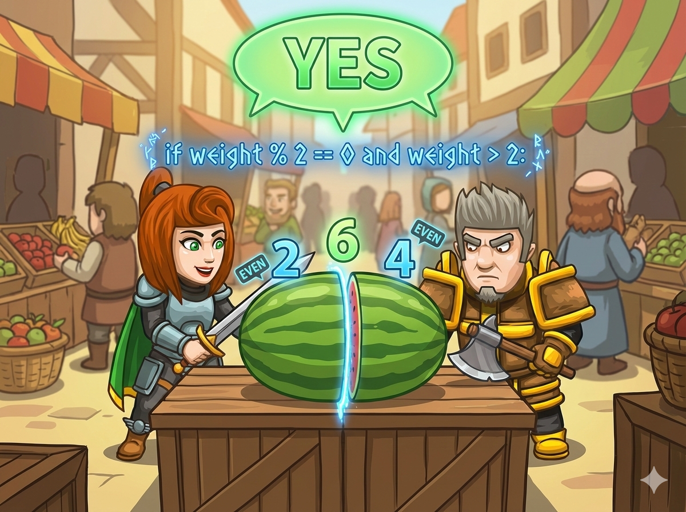

炎炎夏日，安雅和安小风买了一个大西瓜 🍉，重量是 n 斤。 他们想把西瓜切成两半，但有一个奇怪的要求：
👉 两个人分到的重量，都必须是偶数斤！
（比如：2斤和4斤是OK的，但1斤和5斤就不行）
👉 任务： 读入西瓜的总重量，判断能不能切成两个偶数。 如果可以，输出 Yes；否则输出 No。
我们来分析一下数学规律：
所以，西瓜总重量 必须是偶数，才能分成两份一样的性质（要么两份都偶，要么两份都奇）。 但我们要的是“两份偶数”，所以总重量一定要是偶数。
如果西瓜只有 2斤 呢？
2 = 1 + 1 (两个奇数 ❌)
2 = 0 + 2 (0不是正数，不能算分到了西瓜 ❌)
所以，2 是不行的！ 必须是 大于 2 的偶数 (也就是 >= 4)。
( n > 2 ) AND ( n % 2 == 0 )
快帮安雅判断西瓜能不能切吧！
#include <iostream> using namespace std; int main() { // 1️⃣ 声明变量 a (西瓜重量) int a; // 2️⃣ 输入重量 cin >> a; // 3️⃣ 双重判断 // 条件1：必须至少4斤 (a >= 4)，也就是大于2 // 条件2：必须是偶数 (a % 2 == 0) if (a >= 4 && a % 2 == 0) { cout << "Yes"; // 可以切分 } else { cout << "No"; // 不行 } return 0; }
# 1️⃣ 输入：读取西瓜重量，存入变量 n n = int(input()) # 2️⃣ 双重判断 # 条件1：必须是偶数 # 条件2：必须大于 2 (因为2只能分成1+1) if n % 2 == 0 and n > 2: print("Yes") # 可以切分 else: print("No") # 不行
⭐ 思考： 为什么 10 可以？因为 10 = 2 + 8 (偶+偶)，或者 4 + 6 (偶+偶)。只要总数是大于2的偶数，就一定能切出 2 斤和其他偶数斤！